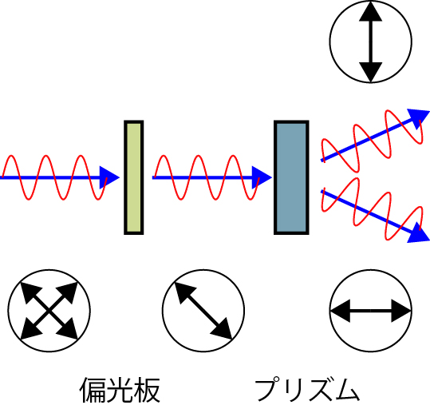
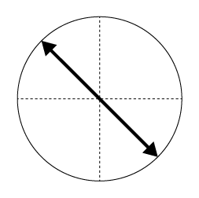

微分干渉顕微鏡の原理-01
さて，微分干渉顕微鏡とはどのようにしてコントラストを上げているのでしょうか？
微分，干渉
という二つのキーワードがあります．
微分：位置，時間などの微小変化に対する変化量
と考えていいですね，微分干渉顕微鏡では，
位置の微小変化に対する変化量
を表します．
干渉：二つ（以上）の異なる波形による相互作用
と考えると，この二つの現象によりコントラストを上げる装置，と考えて良さそうです．
微分干渉顕微鏡が位相差顕微鏡に比べて一番の優位となる点は，
ハロー現象がおきない
というものです．
これは，ここ，の画像を見ていただければ一目瞭然ですが，
位相の差が激しいところに白く光るアーティファクトが発生する
というもので，観察にも困りますし，生物由来ではないものなのに勘違いする危険があります．
ただ，最大の欠点は，
高い
というもので，次に述べるプリズムがやたらと高価なのです．．．．
さて，微分干渉顕微鏡で一番重要となる部品が，
ウォラストンプリズム
です．
別名として，微分干渉プリズム，DICプリズム（オリンパス，ニコン）とも呼ばれています．
その役割は，
光線を二つにわけ，さらにその偏光面が直交する
というものです．
図で見るとわかりやすいですね．

このように，左側から来た偏光がプリズムを通ることにより，その方向が2方向に分かれ，それぞれの偏光面が直交するようになります．

正しくは，
二つの屈折率を持つ物質で，その性質は偏光面に依存する
というものらしいですが，微分干渉顕微鏡を理解するには，上の図で十分です．